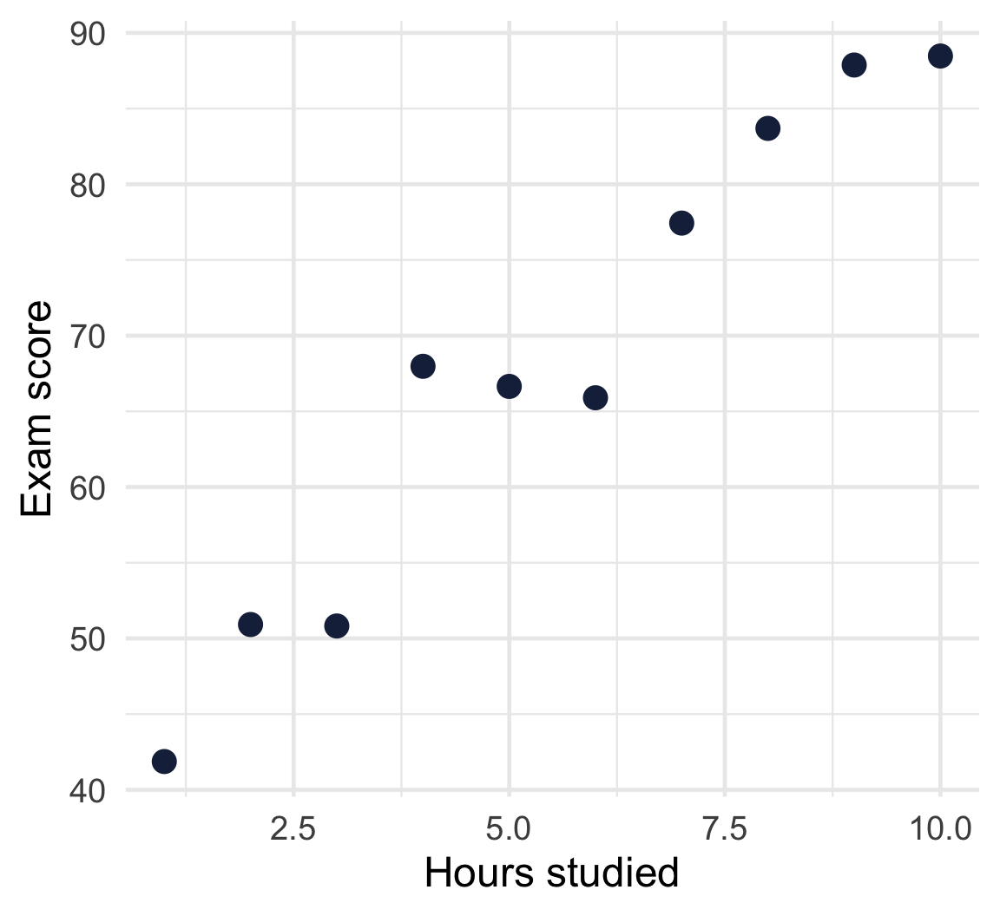
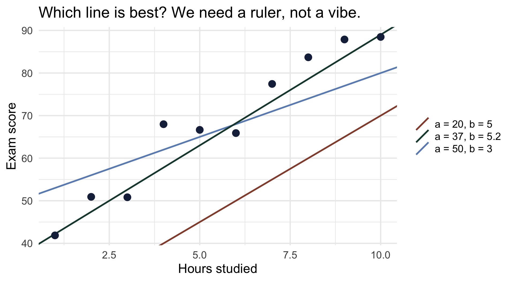
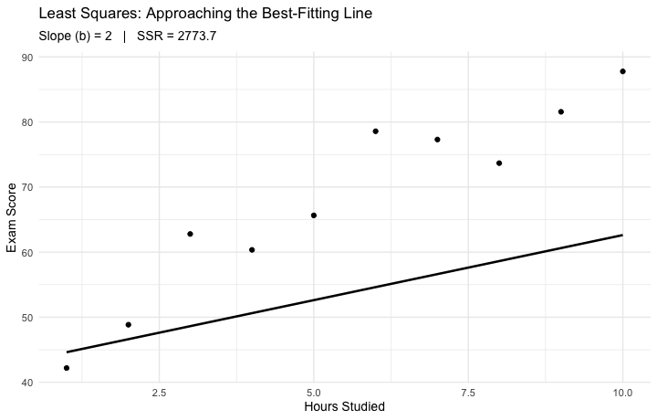
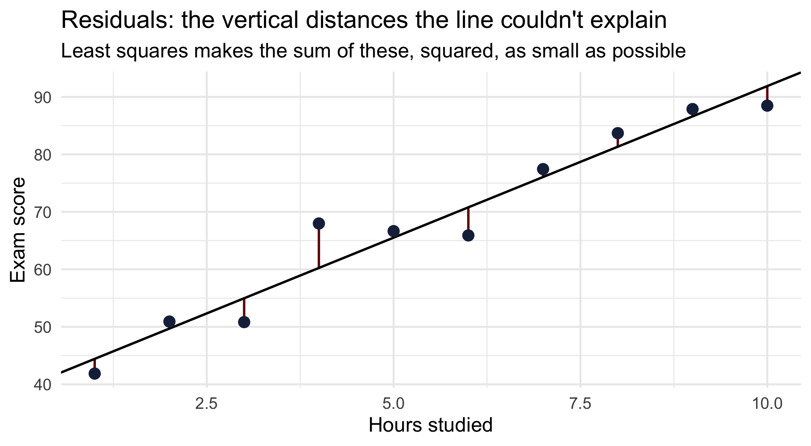
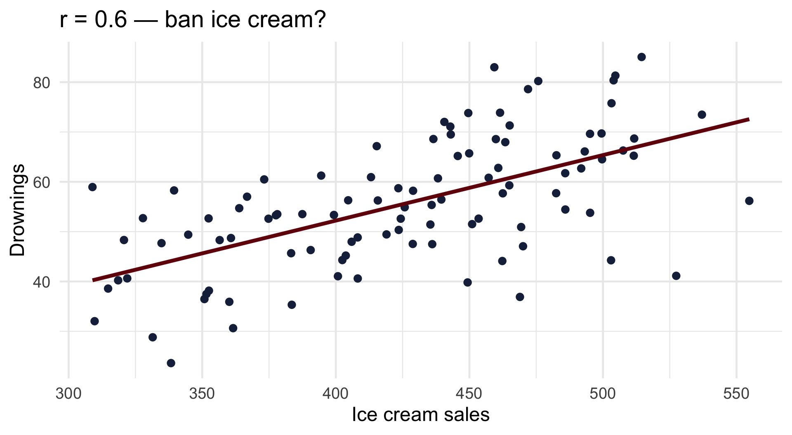
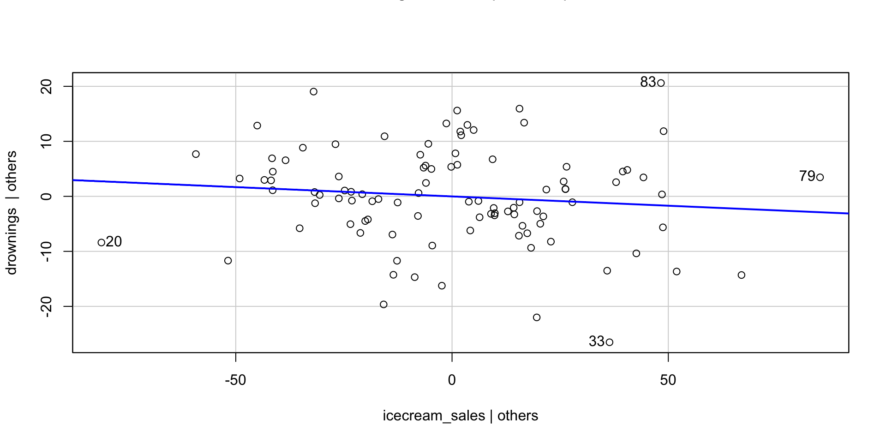
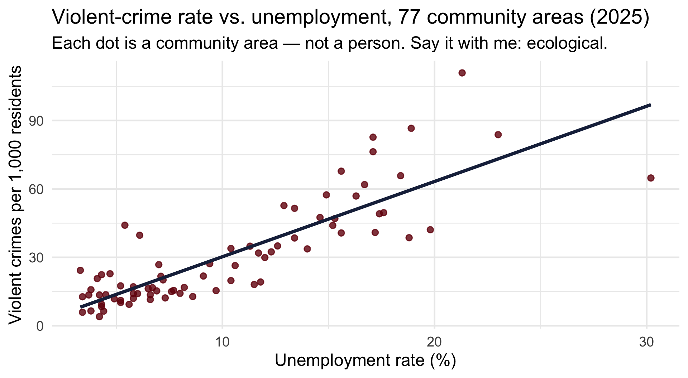
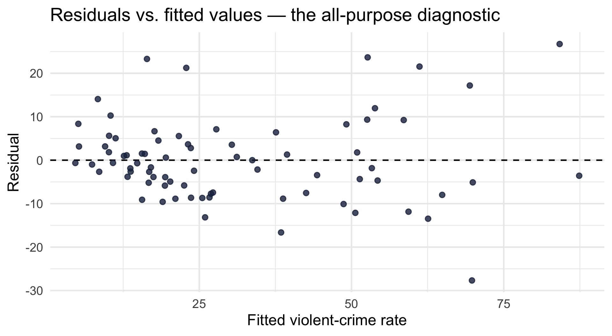
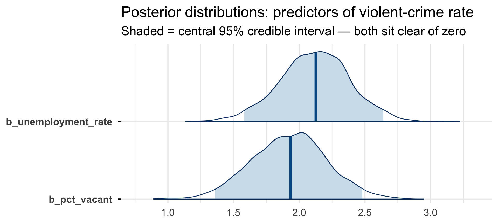

[1] 4405.871[1] 584.9933[1] 196.9529CRJU 705 · Session 11 · Fall 2026
brms; reporting both traditionsLearning goals: fit, interpret, and diagnose lm() with several predictors — and say what a coefficient does and doesn’t mean.
Project: Homework 11 contains Checkpoint 3 — your first regression on your data.
Correlation is a one-lane road between two variables.
Multiple regression adds more lanes — but all the traffic still arrives at one place: the outcome, \(Y\). Each predictor lane contributes part of how we got there.
The question multiple regression answers:
“How much does Y change when \(X_1\) changes by one unit, holding \(X_2\) constant?”
That phrase — holding constant — is the entire value added today. We’ll earn it slowly.
\[Y = a + bX + e\]
| Piece | Name | Meaning |
|---|---|---|
| \(Y\) | outcome | the thing we’re predicting (DV) |
| \(a\) | intercept | predicted \(Y\) when \(X = 0\) |
| \(b\) | slope | change in predicted \(Y\) per one-unit change in \(X\) |
| \(e\) | error | what the line leaves unexplained |
The model is a claim: knowing X, here’s my best guess at Y — plus some miss.
The residual is each observation’s miss: actual \(Y\) minus predicted \(Y\).
# seed 1 kept from the 2025 deck — the three
# candidate lines coming up were tuned to this draw
set.seed(1)
students <- tibble(
hours = 1:10,
score = 40 + 5 * hours + rnorm(10, 0, 5)
)
ggplot(students, aes(hours, score)) +
geom_point(size = 4, color = crju_colors["navy"]) +
labs(x = "Hours studied", y = "Exam score")
Some line through this cloud is the “best” one. Best by what ruler?

For any candidate line, measure every vertical miss, square it (so misses above and below don’t cancel), and add them up:
[1] 4405.871[1] 584.9933[1] 196.9529Smaller total = better line. Least squares = find the line with the smallest total of all.
lm() Finds the WinnerNo trial and error — lm() solves for the one line that minimizes SSR:
(Intercept) hours
39.15588 5.27366 [1] 130.9173Our best hand-picked guess left 197 in squared misses; lm() gets it down to 131 — and no other line does better.
Read the slope: each additional hour of studying predicts about 5.3 more points, in this sample.

The line tilts until the SSR stops shrinking — then it’s the least-squares line.

\[Y = \beta_0 + \beta_1 X_1 + \beta_2 X_2 + \cdots + \beta_k X_k + e\]
Each \(\beta\) is conceptually a partial relationship — how \(X_1\) relates to \(Y\) after removing the overlap with the other predictors. That’s what makes multiple regression more than a stack of correlations.
Two predictors is the last stop where we can actually see the model. So let’s look at it properly.
Grab it and spin it.
Points above the plane are positive residuals; below, negative. For the walkthrough again later — same plane, narrated:
Ice cream sales and drowning deaths are strongly correlated. Every summer. Reliably.
set.seed(705)
lurk <- tibble(
temperature = runif(100, 60, 100),
icecream_sales = 20 + 5 * temperature + rnorm(100, 0, 30),
drownings = -10 + 0.8 * temperature + rnorm(100, 0, 10)
)
ggplot(lurk, aes(icecream_sales, drownings)) +
geom_point(color = crju_colors["navy"], size = 2.5) +
geom_smooth(method = "lm", se = FALSE, color = crju_colors["garnet"]) +
labs(title = paste0("r = ", round(cor(lurk$icecream_sales, lurk$drownings), 2),
" — ban ice cream?"),
x = "Ice cream sales", y = "Drownings")
Estimate Std. Error t value Pr(>|t|)
(Intercept) -0.3876 7.5245 -0.0515 0.959
icecream_sales 0.1315 0.0175 7.5165 0.000 Estimate Std. Error t value Pr(>|t|)
(Intercept) -10.0979 6.5333 -1.5456 0.1255
icecream_sales -0.0339 0.0299 -1.1352 0.2591
temperature 0.9884 0.1553 6.3634 0.0000Holding temperature constant, ice cream’s coefficient collapses to ~0 (and goes nonsignificant). Temperature was driving both variables the whole time.
This is holding constant doing real work: comparing days with the same temperature, ice cream tells you nothing about drownings.
| model | icecream coef | icecream p | temperature coef | R² |
|---|---|---|---|---|
| drownings ~ icecream | 0.132 | 0.000000000027 | — | 0.37 |
| drownings ~ icecream + temperature | -0.034 | 0.26 | 0.99 | 0.55 |
An added-variable plot shows the ice cream–drownings relationship after temperature’s contribution is removed from both:

Flat. That flat line is the multiple-regression coefficient for ice cream.
Keep this loaded. We’re about to fit real Chicago models, and the temptation to talk causally will be enormous.

Each additional percentage point of unemployment is associated with 3.3 more violent crimes per 1,000 residents, and unemployment alone accounts for 71% of the between-area variance. Strong — but is unemployment getting credit for other disadvantage it travels with?
Call:
lm(formula = violent_rate ~ unemployment_rate, data = areas)
Residuals:
Min 1Q Median 3Q Max
-32.137 -6.340 -2.670 5.843 43.339
Coefficients:
Estimate Std. Error t value Pr(>|t|)
(Intercept) -2.7444 2.8629 -0.959 0.341
unemployment_rate 3.3007 0.2463 13.400 <0.0000000000000002 ***
---
Signif. codes: 0 '***' 0.001 '**' 0.01 '*' 0.05 '.' 0.1 ' ' 1
Residual standard error: 12.27 on 75 degrees of freedom
Multiple R-squared: 0.7054, Adjusted R-squared: 0.7014
F-statistic: 179.5 on 1 and 75 DF, p-value: < 0.00000000000000022Both predictors earn significant coefficients, and R² climbs from 0.71 to 0.82.
Watch unemployment’s slope: 3.3 → 2.1. Some of what looked like “unemployment” in the simple model was shared with vacancy. That shrinkage is “holding constant” — the lurker lesson, on real data.
Call:
lm(formula = violent_rate ~ unemployment_rate + pct_vacant, data = areas)
Residuals:
Min 1Q Median 3Q Max
-27.6759 -5.8167 -0.9943 4.5144 26.7266
Coefficients:
Estimate Std. Error t value Pr(>|t|)
(Intercept) -9.2679 2.4616 -3.765 0.000332 ***
unemployment_rate 2.1156 0.2620 8.075 0.00000000000935 ***
pct_vacant 1.9352 0.2859 6.769 0.00000000264664 ***
---
Signif. codes: 0 '***' 0.001 '**' 0.01 '*' 0.05 '.' 0.1 ' ' 1
Residual standard error: 9.708 on 74 degrees of freedom
Multiple R-squared: 0.818, Adjusted R-squared: 0.8131
F-statistic: 166.3 on 2 and 74 DF, p-value: < 0.00000000000000022Intercept (-9.3): predicted rate when both predictors are 0 — no Chicago area looks like that; it anchors the plane, nothing more
unemployment_rate (2.12): +1 point of unemployment ↔︎ ~2.1 more violent crimes per 1,000 residents, vacancy held fixed
pct_vacant (1.94): +1 point of vacancy ↔︎ ~1.9 more violent crimes per 1,000 residents, unemployment held fixed
Coefficient size is meaningless until you check the predictor’s units. Median income, in dollars:
(Intercept) median_income
68.5585257487 -0.0005221118 (Intercept) income_10k
68.558526 -5.221118 Same model, same fit. But −0.0006 “looks like” nothing; the honest reading is ~6 fewer violent crimes per 1,000 residents per $10,000 of median income. Rescale before you interpret.
Add the share of adults without a high-school diploma:
Estimate Std. Error t value Pr(>|t|)
(Intercept) -8.853 2.862 -3.093 0.003
unemployment_rate 2.140 0.276 7.741 0.000
pct_vacant 1.923 0.291 6.613 0.000
pct_no_hs_diploma -0.039 0.135 -0.290 0.773Regression assumes the misses are patternless. So look at the misses:
chi_diag <- tibble(fitted = fitted(chi_m2), residual = resid(chi_m2))
ggplot(chi_diag, aes(fitted, residual)) +
geom_hline(yintercept = 0, linetype = 2) +
geom_point(color = crju_colors["navy"], size = 2.5, alpha = 0.8) +
labs(title = "Residuals vs. fitted values — the all-purpose diagnostic",
x = "Fitted violent-crime rate", y = "Residual")
If two predictors move in near-lockstep, the model can’t tell whose coefficient the shared variance belongs to — estimates get wobbly and standard errors balloon.
VIF (variance inflation factor, from the car package) measures how redundant each predictor is with all the others.
Common rules of thumb: VIF > 5 — pay attention; VIF > 10 — you have a problem.
| Approach | What it estimates | The 95% statement |
|---|---|---|
| Frequentist | Point estimates and confidence intervals | “If we repeated this study many times, 95% of such intervals would contain the true β.” |
| Bayesian | A full posterior distribution for each β | “Given the data and priors, there’s a 95% probability β lies in this range.” |
Same formula, same data — but the Bayesian statement is the one everyone wants to make (remember Session 5’s forbidden sentence? Here it’s allowed).
brm()Identical formula, Bayesian machinery — the same brms workflow you’ve run since ANOVA week:
Estimate Est.Error Q2.5 Q97.5
Intercept -9.25 2.42 -13.93 -4.68
unemployment_rate 2.12 0.27 1.58 2.64
pct_vacant 1.92 0.29 1.36 2.48Posterior means land almost exactly on the least-squares estimates — with flat-ish default priors and decent n, they should. (Full summary(), with its convergence checks, in today’s lab.)

Frequentist:
“Holding vacancy constant, each percentage point of unemployment was associated with 2.1 more violent crimes per 1,000 residents (b = 2.12, 95% CI [1.6, 2.6], p < .001).”
Bayesian:
“Given the data and priors, there is a 95% probability the unemployment coefficient lies between 1.6 and 2.6 — zero is not a credible value.”
Both are area-level, adjusted associations — neither sentence licenses “unemployment causes violence.”
The fitted model:
\[\widehat{\text{violent rate}} = -9.3 + 2.12\,(\text{unemployment}) + 1.94\,(\text{vacancy})\]
Predict the rate for an area with 10% unemployment, 10% vacancy — then 23% and 25% (roughly Englewood). Which prediction does the residual plot say to trust more?
Write one defensible sentence interpreting the vacancy coefficient. Swap and audit: does it say holding unemployment constant? Any smuggled causal verbs (“drives,” “increases”)? Fix what you catch.
CRJU 705 · Session 11